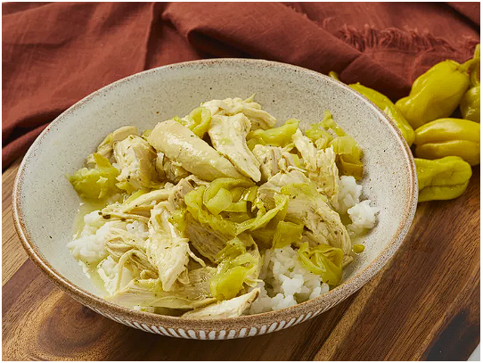

mississipi Chicken

Description
This is such a fun and simple recipe with only 4 ingredients that can
be made in the oven or in the slow cooker. The chicken turns out
buttery, spicy, juicy, and herby.
Ingredients
- 2 pounds skinless, boneless chicken breasts
- 1 (1 ounce) package dry ranch dressing mix (such as Hidden Valley Ranch®)
- 1 (16 ounce) jar sliced pepperoncini peppers, drained
- 4 tablespoons unsalted butter, sliced
Steps
- Preheat the oven to 350 degrees F (175 degrees C).
- Season chicken with ranch seasoning mix; place in bottom of large Dutch oven.
- Let stand 5 minutes. Shred chicken using two forks.